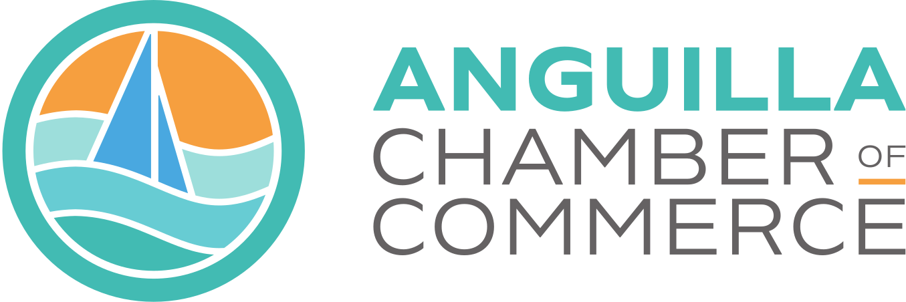

The mark
The ACOCI logo comes in three lockups (horizontal, vertical, icon) and two color treatments (full-color and white). All canonical brand colors are sampled from the horizontal full-color SVG. Use SVG everywhere on the web — PNG (LO) fallbacks are bundled for legacy contexts only.
Horizontal lockup — primary use
The default signature. Use in headers, footers, letterheads, and wherever there is room for the wordmark to breathe.


Vertical lockup — square contexts
Use when width is constrained: social profile cards, certificates, square ad placements, and hero panels with portrait composition.
Icon — favicon, app, badge
For favicons, app icons, social avatars, and tight badge contexts. Never use the icon as a substitute for the wordmark in primary brand surfaces.
assets/images/logo/.
Color
Every color is sampled directly from the horizontal full-color logo SVG — these are the canonical values, not interpretations. The palette reads as shades of blue: a teal family that does most of the lifting, a sail blue for links and information, ink for spine, sun for spark, and cream for breathing room.
Brand primitives
All values sampled from ACOCI_LOGO_HORIZ-CLR.svg. Refer to brand tokens (--brand-*) only when defining new components — application code should use the semantic Layer 2 tokens (--color-primary, etc.).
Teal family
Identity accents
Dark surface & neutrals
Sail blue — its role
Sail (#48A8E0) appears in the logo as a single bright accent. To stop it competing with teal as a CTA color, it has one job on the website: information and navigation that isn't a primary action. Inline links, breadcrumb links, info banners, and chart accents.
Usage ratio
Roughly how the palette should distribute across a page. White dominates; teal does the brand work; gradient anchors dark surfaces; sail and sun appear sparingly.
Typography
Bricolage Grotesque for headings (variable axes: wdth 100–110, opsz matched to size). Hanken Grotesk for body. The type scale is fluid — every step interpolates from a 1.25 ratio at 360px to a 1.5 ratio at 1340px.
A stronger Anguilla economy, together.
Display heading
Section heading
Card heading
Lead paragraphs and pull quotes use a heavier body size to anchor the page.
The default reading size. Hanken Grotesk at 400 weight, 1.65 line-height, on a comfortable measure of about 65 characters.
Captions, metadata, and dense lists.
Border radius
All corner radii are derived from --space-sm, so they scale with spacing density. Use --radius-sm for buttons and form inputs, --radius-md for cards and photos, and --radius-full for pill shapes.
Elevation
Shadows are tinted toward the canonical logo teal (hsl(176deg 47% 49%)) so depth feels of-a-piece with the palette. Use lightly — most surfaces sit on the page with a hairline rule, not a shadow.
Buttons
Square-ish corners, bold weight, optional arrow. Primary is teal — reserve it for the single most important action on a page. Secondary patterns are ghost (on light), outline (on light), light (on dark), and white (on photos or teal panels).
Voice
ACOCI speaks like a trusted Chamber chairperson — warm but precise, grounded in Anguilla, oriented to outcomes. Headlines do the work; subtext earns the click.
Do
Plainspoken, action-oriented, specific to Anguilla.
- "Building a stronger Anguilla economy, together."
- "Connect with fellow members, government officials, and regional partners."
- "Get found by residents, visitors, and investors."
Don't
Avoid corporate filler, vague abstractions, and superlatives without proof.
- "Leveraging synergies to unlock value across the ecosystem."
- "World-class. Best-in-class. Industry-leading."
- "At the end of the day, we're committed to excellence."